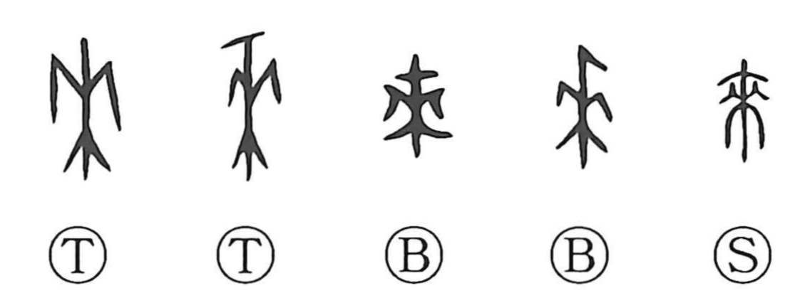

来

Kun: kuru, kitaru, kitasu | On: rai
to come ・ to bring
Explanation
来 abbreviates 來, originally a picture of a wheat plant. Its stem, grain-bearing head, and branching growth are visible in the early forms. The plant belongs to the agricultural traditions surrounding the Zhou ancestor 后稷 and the gift of auspicious grain.
The everyday ‘to come’ was already written with this graph in oracle-bone inscriptions. It is a sound loan, as are related early uses for bringing or bestowing.
Later writings distinguish some functions: 徠 adds movement for coming, while 賚 concerns a gift or reward. 来 remains the ordinary writing for arriving, causing something to come, inviting it, and the time that has passed since a stated point.